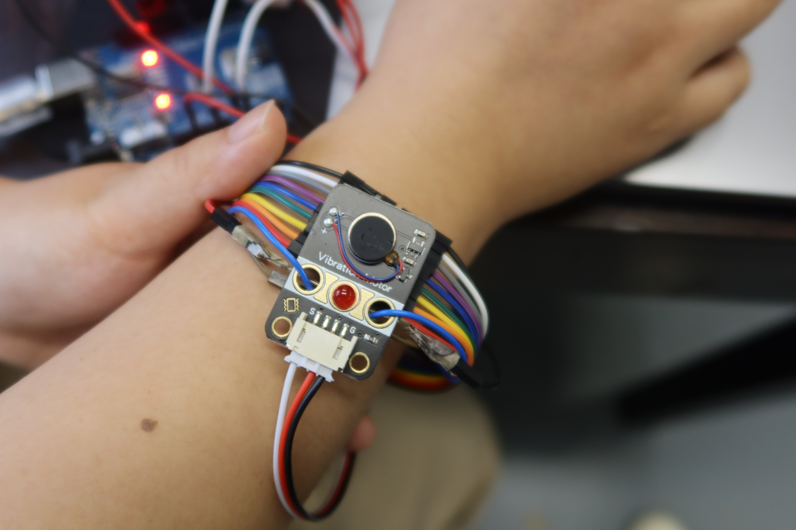

← Projects
X +0.30 · Y −0.40
XR-urban interface · Design fiction
The Planet Bang
The Planet Bang imagines a city where wearable XR devices have replaced smartphones, and people absorbed in personal virtual worlds stop noticing the public space around them. It answers by making that space part of the game. Two players wearing headsets throw virtual planets at each other; when the planets collide, Arduino wearables vibrate and light up, TouchDesigner projects the collision onto a building facade, and the reactions of passers-by are sensed and sent back to the players as holographic messages. Built as a working prototype in a seven-day workshop, it asks how immersive devices could prompt encounters between strangers instead of isolating them.


